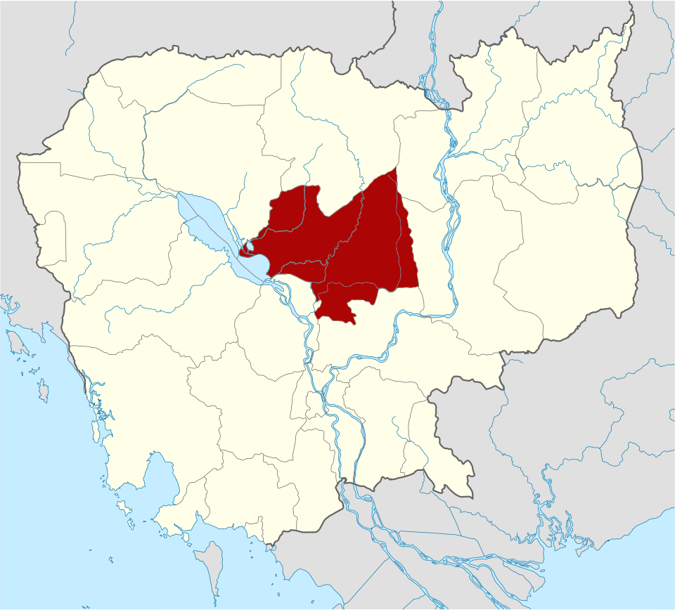
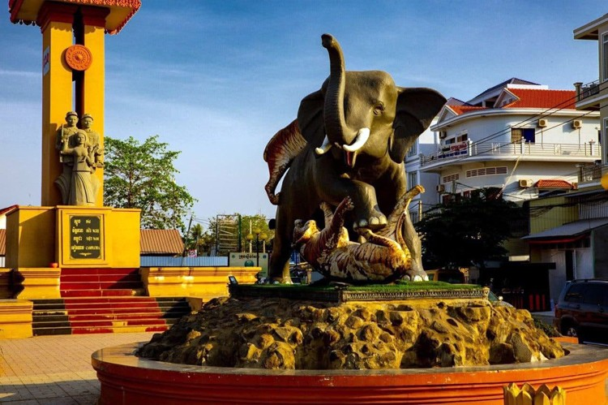
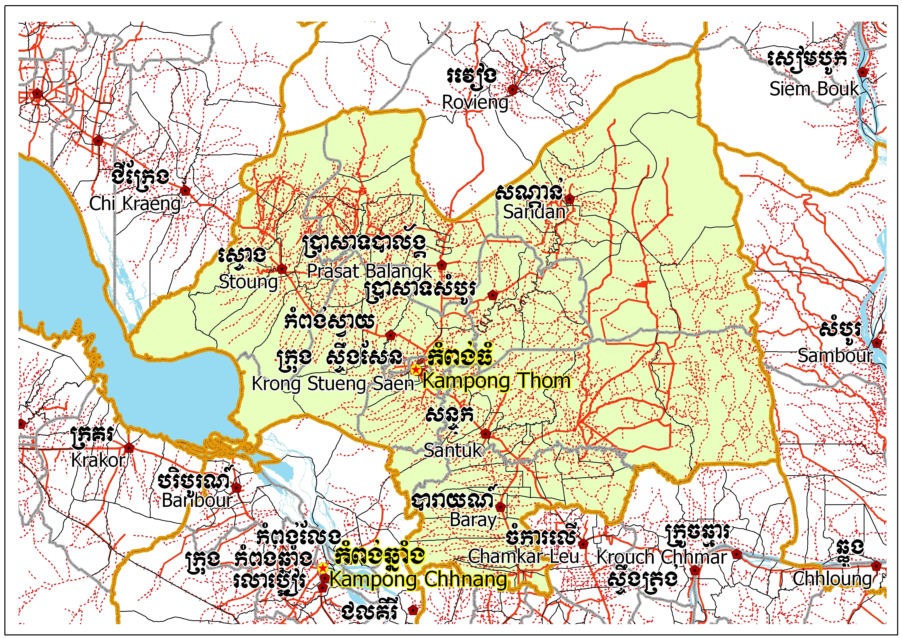
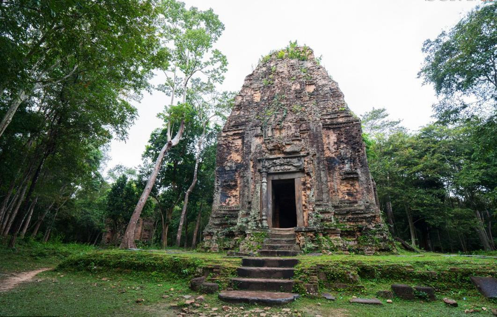
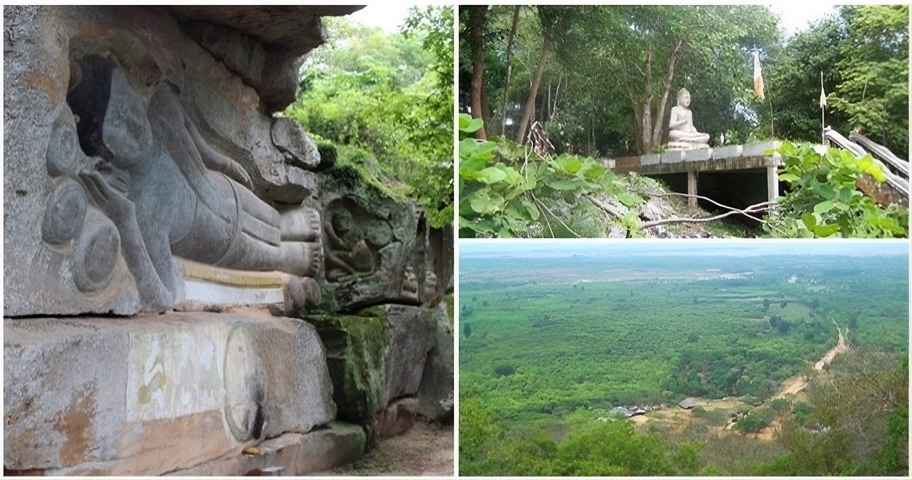
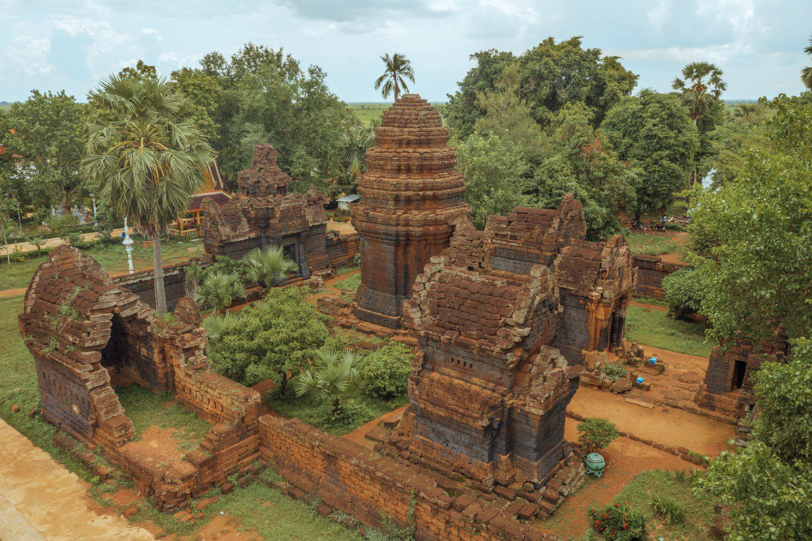

Kampong Thom
← ត្រឡប់ទៅផែនទីកំពង់ធំ គឺជាខេត្តមួយក្នុងប្រទេសកម្ពុជា ។ វាមានព្រំប្រទល់ជាប់ខេត្តសៀមរាប នៅភាគពាយព្យ ព្រះវិហារ នៅភាគខាងជើង ស្ទឹងត្រែងនៅភាគឦសាន ក្រចេះនៅខាងកើត កំពង់ចាម កំពង់ឆ្នាំង នៅខាងត្បូង និង បឹងទន្លេសាបនៅភាគខាងលិច។ ខេត្តកំពង់ធំមានទីរួមខេត្តឈ្មោះក្រុងស្ទឹងសែន ដែលជាទីក្រុងមួយដែលមានប្រជាជន ៣០ ០០០ នាក់ មានទេសភាពដ៏ល្អប្រណីត គួរអោយចាប់ចិត្ត ស្ថិតនៅតាមបណ្តោយនៃច្រាំងដងស្ទឹងសែន។ កំពង់ធំ គឺជាខេត្ត មួយដែលស្ថិតនៅចំកណ្តាលផ្ទៃប្រទេសកម្ពុជា។ ខេត្តនេះមានផ្ទៃដីសរុប ១៣ ៨១៤ សហាតិមាត្រការ៉េ ហើយបែងចែកជា ៩ ស្រុក-ក្រុង, ៨១ ឃុំ-សង្កាត់ និង ៧៣៤ ភូមិ។ ខេត្តកំពង់ធំជាខេត្តមានផ្ទៃដីធំទី២នៅក្នុងប្រទេសកម្ពុជា។ ក្រុមប្រាសាទសំបូរព្រៃគុហ៍ ដែលសរុបមានប្រមាណជិតពីររយប្រាសាទផ្សេងទៀត មានសារៈសំខាន់ណាស់សម្រាប់ការសិក្សាអំពីអារ្យធម៌ខ្មែរ មុនសម័យអង្គរ។ ក្រុមប្រាសាទទាំងនេះមានការទាក់ទាញទេសចរណ៍ និង អ្នកស្រាវជ្រាវដូចជាប្រាសាទដទៃទៀតក្នុងតំបន់អង្គរដែរ ហើយដែលត្រូវបានគេចាប់អារម្មណ៍យ៉ាងខ្លាំងនៅពេលបានទៅ ទស្សនាផ្ទាល់។ មានស្ថានីយ៍បុរាណសម័យអង្គរគួរឱ្យចាប់អារម្មណ៍ជាច្រើនក្នុងតំបន់នេះ រួមមានប្រាសាទសំបូរព្រៃគុក និង ប្រាសាទអណ្ដែត។ ជាពិសេសនៅពេលបានទៅកំសាន្តហើយៗបានស្នាក់នៅ ១ យប់ ឬ ពីរយប់ជាមួយប្រជាជននៅទីនោះ ជាពិសេសនៅភូមិកំពង់ឈើទាលនាមាត់ស្ទឹងសែន។ នោះគឺ ផ្ទះស្នាក់ របស់សហគមន៍នៅទីនោះ។ ខេត្តនេះ មានបណ្តាញផ្លូវជាតិលេខ៦ ភ្ជាប់ពី ក្រុងភ្នំពេញ ទៅ ខេត្តសៀមរាប ហើយ មានផ្លូវបំបែកទៅ ខេត្តព្រះវិហារ តាមរយៈផ្លូវជាតិលេខ៦៤ ដែលមានចម្ងាយ ១២៦ សហាតិមាត្រ។ ខេត្តកំពង់ធំជាខេត្តមួយផងដែរដែលសំបូរទៅដោយសក្តានុពលទេសចរណ៍ដើម្បីទាក់ទាញភ្ញៀវទេសចរជាតិនិងអន្ដរជាតិដូចជាការកម្រនិងអសកម្មបឹង, ទន្លេ, ព្រៃភ្នំនិងប្រាសាទបុរាណចំនួនជាង 200 ។ ក៏ជាខេត្តមួយក្នុងចំណោមខេត្តទាំងប្រាំបួនដែលមានព្រំប្រទល់ជាប់បឹងទន្លេសាបដែរ កំពង់ធំជាប៉ែកនៃឋបនីយដ្ឋានជីវមណ្ឌលបឹងទន្លេសាប។

ខេត្តកំពង់ធំបែងចែកជាពីរតំបន់៖


ខេត្តកំពង់ធំមានផ្ទៃក្រលា ១៣ ៨១៤ គីឡូម៉ែត្រការ៉េ ត្រូវបានចែកចេញជា ៩ ក្រុង-ស្រុក, ៨១ សង្កាត់-ឃុំ និង ៧៣៤ ភូមិ៖
ប្រាសាទសម្បូរព្រៃគុកមានទីតាំងស្ថិតនៅភូមិសម្បូរ ឃុំសម្បូរ ស្រុកសម្បូរ ខេត្តកំពង់ធំ។ ប្រាសាទនេះស្ថិតនៅតាមបណ្តោយស្ទឹងសែន ដែលមានចម្ងាយប្រហែល ២៨គីឡូម៉ែត្រភាគឦសាននៃទីរួមខេត្តកំពង់ធំ និងមានចម្ងាយប្រហែល ១៨១គីឡូម៉ែត្រពីរាជធានីអង្គរនៃខេត្តសៀមរាប និងមានចម្ងាយប្រហែល១៧០គីឡូម៉ែត្រពីប្រាសាទព្រះវិហារនៃខេត្តព្រះវិហារ និងមានចម្ងាយប្រហែល ១៩៦គីឡូម៉ែត្រពីរាជធានីភ្នំពេញ។ ប្រាសាទសម្បូរព្រៃគុកជាប្រភេទរមណីយដ្ឋានវប្បធម៌ និងប្រវត្តិសាស្រ្ត ដែលមានមានចម្ងាយប្រមាណ ៣៧គីឡូម៉ែត្រ បត់តាមផ្លូវជាតិ៦៤ បត់ស្តាំតាមសាលាវិស័យ កាត់តាមផ្លូវបុសស្រមោច ផ្លូវនេះពេលរដូវវស្សាលិចទឹក តែយើងអាចធ្វើដំណើរឆ្ពោះទៅស្រុកសំបូរបានតែម្តង។ដែលសង់លើដី រាបស្មើមានទំហំ ៣,០០០ ហិកតា ។ រមណីដ្ឋានសំបូរព្រៃគុក ជារាជធានីចាស់ឈ្មោះថា ឥសានបុរៈ ពីសម័យនោះជាមជ្ឈមណ្ឌលនៃព្រាហ្មញ្ញសាសនា ដើម្បីឧទ្ទិសថ្វាយដល់ ព្រះសិវៈ ឬព្រះឥសូរនិយម។ ក្រុមប្រាសាទនេះសាងសង់អំពីឥដ្ឋតាន់ និង ថ្មបាយក្រៀមលម្អទៅដោយចម្លាក់ពីលើឥដ្ឋ ចាក់ពុម្ភដោយបាយអ ជាផ្ទាំងៗអំពីឥដ្ឋ តែបច្ចុប្បន្នរបេះអស់មួយចំនួន។ ក្បាច់ផ្តែរ និងការសរសេរជាពាក្យពេជ្រ ប្រអប់ទ្វារធ្វើអំពីថ្មភក់ទាំងអស់។ប្រាសាទនេះកសាងឡើងនៅរជ្ជកាលព្រះបាទឥសានវរ្ម័នទី១ នៅក្នុង សតវត្សរ៍ទី៧ (គ.ស៦១៦-៦៣៥) នាសម័យចេនឡាក្រុមប្រាសាទសំបូរព្រៃគុកនេះ ត្រូវបានបោះបង់ចោលតាំងពីឆ្នាំ១៩៧១មកម្លេះ ហើយត្រូវបានរៀបចំសារជាថ្មីនៅឆ្នាំ១៩៨០។ ក្នុងការកាប់ស្ការព្រៃគេរកឃើញមាន ប្រាសាទទាំងអស់ចំនួន ១៤០ប្រាសាទ ហើយនៅប្រាសាទទៅពីទៀត រកមិនទាន់ឃើញ[១]។ រមណីយដ្ឋានសម្បូរព្រៃគុកចែកចេញជា៤ក្រុមធំៗគឺ៖ ក្រុមប្រាសាទខាងជើង ក្រុមប្រាសាទកណ្តាល ក្រុមប្រាសាទខាងត្បូង ក្រុមប្រាសាទក្រោលរមាស។នាថ្ងៃទី៨ ខែកក្កដា ឆ្នាំ២០១៧ តំបន់ប្រាសាទសំបូរព្រៃគុក ត្រូវបានសម្រេចចុះក្នុងបញ្ជីបេតិកភណ្ឌពិភពលោក នៅក្នុងកិច្ចប្រជុំគណៈកម្មាធិការបេតិកភណ្ឌពិភពលោក នៅទីក្រុងក្រាកូវ ប្រទេសប៉ូឡូញ ។


ភ្នំសន្ទុកជាភ្នំនិងតំបន់វប្បធម៌ក្នុងខេត្ត កំពង់ធំ របស់ ប្រទេសកម្ពុជា ។ ស្ថិតនៅភូមិ កកោះ ឃុំ កកោះ ស្រុកសន្ទុក គឺជាភ្នំដ៏ពិសិដ្ឋបំផុតរបស់ខេត្ត។ កំពូលភ្នំនេះត្រូវបានចូលដោយផ្លូវថ្មដែលមានរូបចម្លាក់ជាច្រើននៅខាងមុខផ្លូវ។ នៅផ្នែកខាងលើគឺជាប្រាសាទដែលមានជញ្ជាំងពណ៌ស និងមានទីសក្ការៈបូជា និងអាទិទេពជាច្រើន រួមទាំងព្រះពុទ្ធបដិមាជាច្រើនអង្គដែលធ្វើពីថ្ម ប្រវែងជាង ១០ ម៉ែត្រ ។ មានព្រះសង្ឃគង់នៅទីនោះ។ភ្នំសន្ទុកលេចចេញក្នុងរឿងព្រេងនិទាន បក្សីចាំក្រុង ។ ពេលដែលតាម៉ឹងបានទទួលបក្សីចាំក្រុងពេលដែលបក្សីចាំក្រុងនិងតាកហេ ដែលកំពុងភៀសខ្លួនពីអង្គរ គាត់បានផ្តល់ជម្រកដល់ពួកគេ និងចិញ្ចឹមពួកគេដោយក្តីអាណិត។ គាត់ចេញទៅប្រមូលបាយ ទឹក ត្រី សាច់ ហើយទុកនៅតាកហេជាអាហារសម្រាប់ធ្វើដំណើរ។ នៅក្នុងរឿងព្រេងនិទានអ្នកនិទានរឿងពន្យល់ថា កន្លែងនោះជាកន្លែងជ្រកកោននៅភ្នំសន្ទុក ហេតុនេះហើយបានជាគេស្គាល់ថា ភ្នំទុក្ខទុក្ខ ឬហៅកាត់ថា ភ្នំសន្ទុក។ភ្នំសន្ទុក គឺជាភ្នំមួយដែលមាន ២០៧ម៉ែត្រកម្ពស់ដែលឡើងពីលើជ្រលង ទន្លេសាប ។ កំពូលភ្នំអាចទៅដល់បានដោយការឡើង 809 ជំហាន ឬតាមរយៈផ្លូវក្រាលកៅស៊ូ ២.៥គីឡូម៉ែត្រ។ ទេសភាពនៃជ្រលងទន្លេសាបអាចត្រូវបានគេសង្កេតឃើញពីកំពូលភ្នំ ជាមួយនឹងទិដ្ឋភាពថ្ងៃលិចនៅលើវាលស្រែដែលត្រូវបានចាត់ទុកថាជាកន្លែងទាក់ទាញទេសចរណ៍ដ៏សំខាន់មួយ។ ភ្នំស្រះខ្មៅដែលមានទីតាំងនៅជាប់នឹងភ្នំតង់គុក មានប្រាសាទឥដ្ឋ និងល្អាងប្រចៀវ។
ប្រាសាទគុហនគរមានទីតាំងស្ថិតនៅក្នុងភូមិត្រដក់ភូមិត្រដក់ពង ឃុំពង្រ ស្រុកបារាយណ៍ ។ រមណីដ្ឋាននេះមានផ្ទៃក្រលា ២០០ x ២០០ ម២ = ៤០០០០ម២ ដែលមានចំងាយ ៩៦គីឡូម៉ែត្រពីរាជធានីភ្នំពេញ។ ប្រាសាទគុហនគរនេះស្ថិតនៅក្នុងបរិវេណវត្តគហនគរ។ ប្រាសាទនេះមានទ្រង់ទ្រាយប្រហាក់ប្រហែលនឹងប្រាសាទទន្លេបាទី ដែលបានស្ថាបនាឡើងអំពីថ្មបាយក្រៀម ក្នុងសតវត្សទី១១ រាជ្ជកាលព្រះបាទសូរ្យវរ្ម័នទី១។ ប្រាសាទគុហនគរមានបណ្តោយប្រវែង ៤៥ម៉ែត្រ និង ទទឹងប្រវែង ៣៥ម៉ែត្រ ព័ទ្ធជុំវិញដោយរបងថ្មក្រៀមដែលមានកំពស់ ៣ម៉ែត្រ។ ប្រាសាទគុកនគរកសាងឡើងក្នុងរជ្ជកាលព្រះបាទសូរ្យវរ្ម័នទី១ ក្នុងសតវត្សរ៍ទី១១ តាមរចនាបថឃ្លាំង ។ ប្រាសាទនេះកសាងលើដីរាបស្មើ លើខឿនតែ មួយរាងចតុកោណកែង ធ្វើអំពីថ្មបាយក្រៀម និង ថ្មភក់ បែរមុខទៅទិស ខាងកើត មានកំពែងព័ទ្ធជុំវិញ លាតសន្ធឹងពីកើតទៅលិច មានបណ្តោយប្រវែង ៣៥ ម៉ែត្រ ទទឹង ២៥ ម៉ែត្រ មានគោបុរៈ ( ទ្វារ ឆ្លងកាត់កំពែងប្រាសាទ ) ចំនួនបី ។ គោបុរៈខាងកើតកម្ពស់ ៩ ម៉ែត្រ មានទ្វារចូលចំនួន ៣ កន្លែង ។ ទ្វារកណ្តាល មានលក្ខណៈតូចចង្អៀត ហើយងងឹតបន្តិច និង មាននៅសងខាងចំនួនពីរ ទៀត ។ គោបុរៈខាងលិចមានទំហំតូច មានទ្វារមួយចូលទៅខាងក្នុង តែមិនអាចចេញទៅខាងក្រៅបានទេ ។ គោបុរៈខាងត្បូងអែបជាប់នឹងព្រះវិហារមិន ស្ថិតនៅចំកណ្តាលកំពែងទេ មានទ្វារចូលពីប្រាសាទ ទៅខាងក្នុង តែមិនអាចចេញទៅក្រៅកំពែងបានទេ មានតែ ចង្អូរមួយដែលគេចោះទម្លុះជញ្ជាំងទៅខាង ក្រៅសម្រាប់បង្ហូរទឹកមន្តនៅពេលគេធ្វើពិធីស្រោច ទឹកនៅលើសិវលិង្គ ( ស្ថាណាទ្រោនី )។ នៅចំកណ្តាលមានប៉មខ្ពស់ទោលមួយ មាន បន្ទប់ និង យ៉យ៉ាងវែងចេញទៅទិសខាងកើត ហើយ នៅចំពីមុខមាន សសរពេជ្ររាង ៨ ជ្រុងនៅសងខាង ។ នៅផ្នែកខាងលើនៃសរសេរមានតុបតែងជាក្បាច់ ខ្លួននាគព័ទ្ធកោងដោយ បញ្ចោញក្បាលទៅសងខាងពាំផ្កាចន្ទន៍។នៅលើសសរពេជ្រនេះមានផ្តែរមួយ ផ្ទាំងរចនាដោយក្បាច់ផុស ហើយនៅចំកណ្តាលផ្តែរនោះមានរូបព្រះឥន្ទ្រជិះដំរីក្បាលបី ។ តួប៉មកណ្តាល នេះត្រូវបានតុបតែងលម្អចាប់ពីក្រោម រហូតដល់ខាងលើ ។
